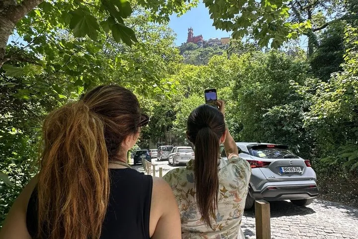

Included
The day’s essentials
- Private guide
- Lisbon pickup and drop-off
- Private transport

Private day from Lisbon
Historic Sintra, mountain viewpoints, Europe’s Atlantic edge and Cascais in one private day, without having to manage the route yourself.
Why this day
Sintra is not one landmark. It is a historic town, a forested mountain, palace viewpoints and a coastline that changes the scale of the day. This route brings those pieces together, then continues to Cascais, with the transport and sequence already handled.
The day has a clear structure, while stops, pace and timing can respond to your group, weather and interests.
The route is designed as a coherent progression from Lisbon into Sintra’s cultural landscape, across the mountain and out to the Atlantic.

Included
Not included
Flexibility
Stops, pace and timing can adapt to your group, the weather and your interests.
Check your dates
Send your dates and group size. About Culture Things will confirm availability, pickup and payment details by reply.
€299 per private group, charged in EUR
Check availability on WhatsAppFree cancellation with 24 hours’ notice.